CST8914 Oral Exam Practice
练习页面：Workshop 练习页
1 Keyboard Accessibility（键盘）
| Step | Action | What you see | 中文翻译 |
|---|---|---|---|
| 1 | Press Ctrl+L, then Enter. |
The page reloads and focus goes back to the top of the page. | 按 Ctrl+L，再按 Enter。页面重新加载，焦点回到页面顶部。 |
| 2 | Press Tab. |
Focus jumps straight to Sign up and skips Show location: keyboard focus is unpredictable. | 按 Tab。焦点直接跳到 Sign up，跳过了 Show location：键盘焦点不可预测。 |
| 3 | Press Tab four more times. |
The focus order does not follow the page from top to bottom. | 再按四次 Tab。焦点顺序没有按页面从上到下走。 |
| 4 | Short answer | "Keyboard focus is unpredictable: the first Tab goes to Sign up, so keyboard-only users lose their place." | 简短回答：键盘焦点不可预测：第一次按 Tab 就到了 Sign up，所以只用键盘的用户会找不到自己的位置。 |
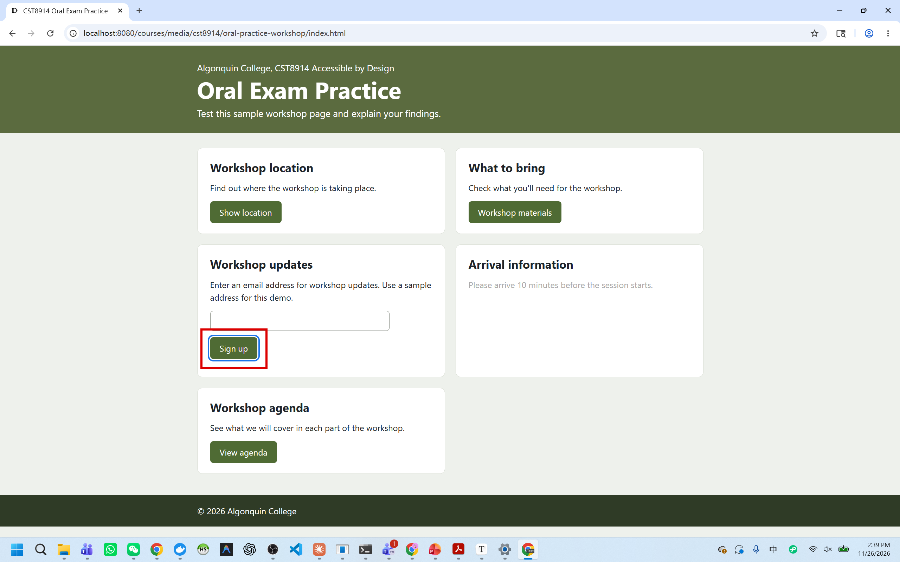
2 Screen Reader Testing（NVDA）
| Step | Action | What NVDA says | 中文翻译 |
|---|---|---|---|
| 1 | Press Ctrl+Alt+N to start NVDA; press Insert+N, then Tools, then Speech Viewer. |
The Speech Viewer opens. | 按 Ctrl+Alt+N 启动 NVDA；按 Insert+N，再选 Tools，然后选 Speech Viewer。Speech Viewer 打开。 |
| 2 | Press Ctrl+L, Enter, then Tab three times. |
"Workshop materials button collapsed" | 按 Ctrl+L、Enter，再按三次 Tab。NVDA 读出 "Workshop materials button collapsed"。 |
| 3 | Press Space. |
Still "button collapsed": the expanded state is not conveyed to the screen reader. | 按 Space。仍然是 "button collapsed"：展开状态没有传达给屏幕阅读器。 |
| 4 | Press Tab once more. |
"edit required blank": the instructions are not conveyed to the screen reader. | 再按一次 Tab。NVDA 读出 "edit required blank"：说明文字没有传达给屏幕阅读器。 |
| 5 | Press Insert+Q, then Enter. |
NVDA exits. | 按 Insert+Q，再按 Enter。NVDA 退出。 |
| 6 | Short answer | "The expanded state is not conveyed to the screen reader: NVDA still says collapsed after it opens, so screen reader users don't know it expanded." | 简短回答：展开状态没有传达给屏幕阅读器：展开后 NVDA 仍然说 collapsed，所以屏幕阅读器用户不知道它已经展开。 |
| 7 | Short answer | "The email instructions are not conveyed to the screen reader: NVDA only says edit required blank, so screen reader users don't know what to type." | 简短回答：邮箱说明没有传达给屏幕阅读器：NVDA 只说 edit required blank，所以屏幕阅读器用户不知道该输入什么。 |
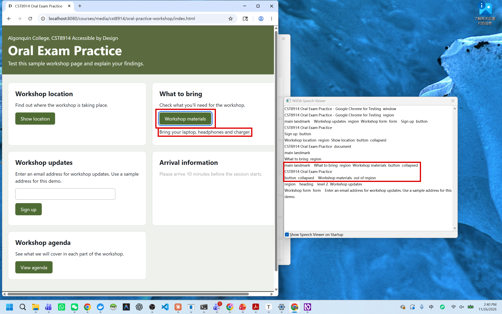
3 Automated Testing（自动工具）
| Step | Action | What you see | 中文翻译 |
|---|---|---|---|
| 1 | Click the WAVE icon in the extensions bar (or press Ctrl+Shift+U). |
The WAVE panel opens on the left. | 点扩展栏里的 WAVE 图标（或按 Ctrl+Shift+U）。WAVE 面板在左边打开。 |
| 2 | Look at Details. | One error: Missing form label; one contrast error: Very low contrast; one alert: Tabindex. | 看 Details。一个错误：Missing form label，缺少表单标签；一个对比度错误：Very low contrast，对比度很低；一个提醒：Tabindex。 |
| 3 | Click the red icon under Missing form label. | The page scrolls to the icon next to the email field. | 点 Missing form label 下面的红色图标。页面滚动到邮箱输入框旁边的图标。 |
| 4 | Short answer | "WAVE shows one error, a missing form label on the email field, which affects screen reader users." | 简短回答：WAVE 显示一个错误：邮箱输入框缺少表单标签，影响屏幕阅读器用户。 |
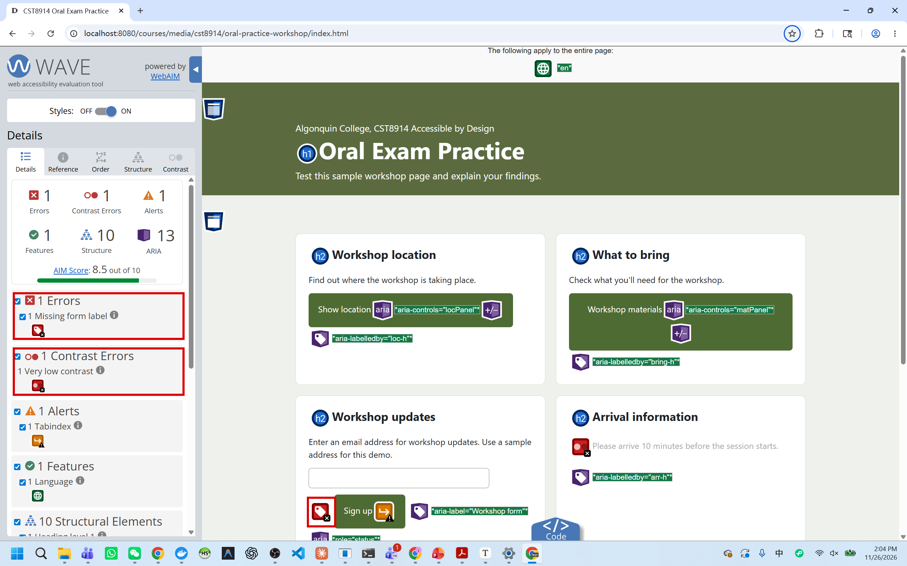
4 Colour Contrast（对比度）
| Step | Action | What you see | 中文翻译 |
|---|---|---|---|
| 1 | Press F12 to open DevTools, press Ctrl+Shift+C, and hover over the grey text "Please arrive 10 minutes…". |
The tooltip shows Color #AAAAAA and Contrast 2.32. | 按 F12 打开开发者工具，按 Ctrl+Shift+C，鼠标停在灰色文字 "Please arrive 10 minutes…" 上。提示框显示 Color #AAAAAA 和 Contrast 2.32。 |
| 2 | Click the grey text. | Styles show color: #aaaaaa; the card background is #ffffff. |
点这段灰色文字。Styles 里显示 color: #aaaaaa；卡片背景是 #ffffff。 |
| 3 | Press F12 to close DevTools, then click Contrast Checker in the bookmarks bar. |
The Contrast Checker opens with 0000FF on FFFFFF. | 按 F12 关闭开发者工具，再点书签栏里的 Contrast Checker。Contrast Checker 打开，显示 0000FF 对 FFFFFF。 |
| 4 | Click the Foreground Hex Value box and press Ctrl+A. |
The foreground value is selected. | 点前景色的 Hex Value 输入框，按 Ctrl+A。前景色的值被选中。 |
| 5 | Type AAAAAA and press Enter (the background is already FFFFFF). |
2.32:1, Normal Text Fail: it's a fail. | 输入 AAAAAA，按 Enter（背景已经是 FFFFFF）。结果是 2.32:1，Normal Text 显示 Fail：不通过。 |
| 6 | Short answer | "The arrival text is #AAAAAA on #FFFFFF, 2.32 to 1. It's a fail for low-vision users." | 简短回答：到达说明文字是 #AAAAAA 对 #FFFFFF，2.32 比 1。对低视力用户来说不通过。 |
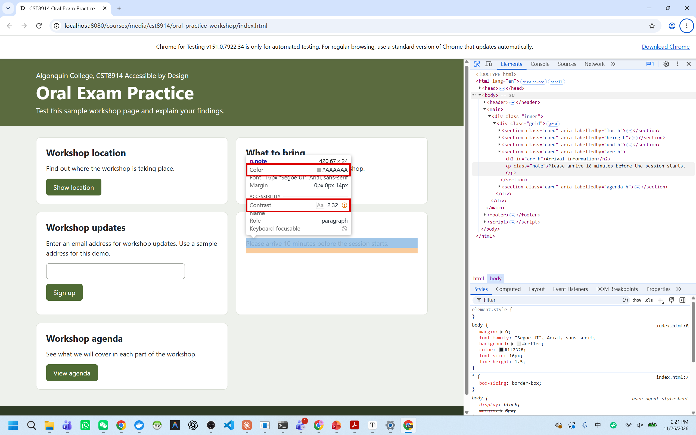
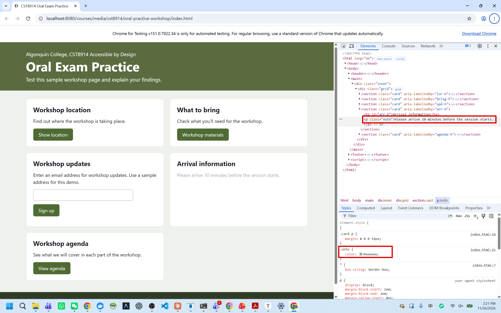
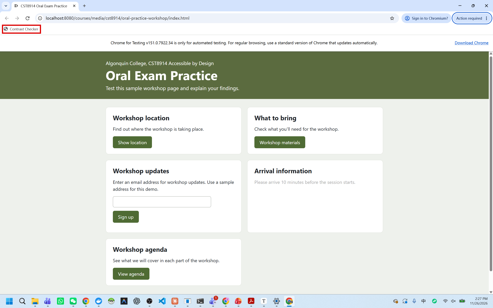
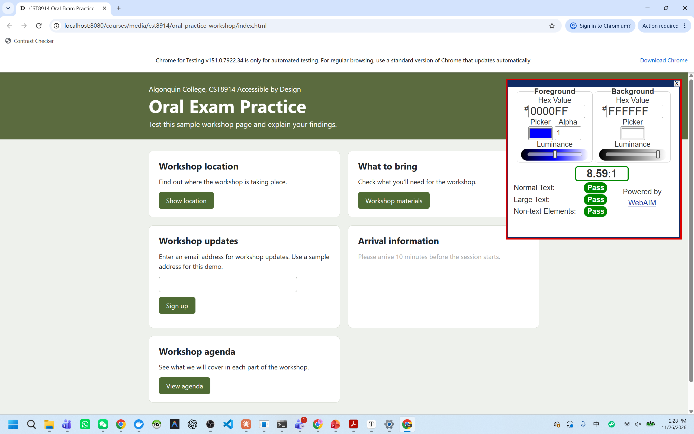
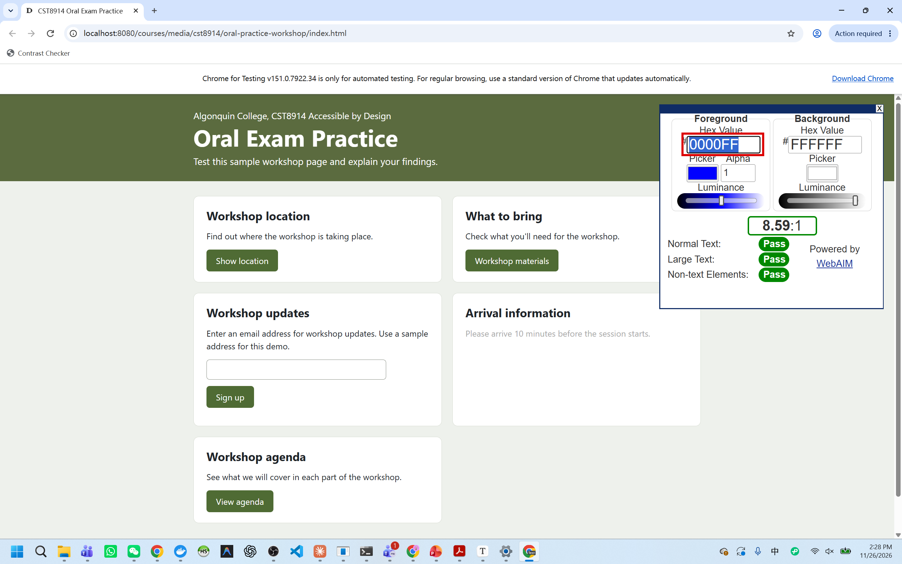
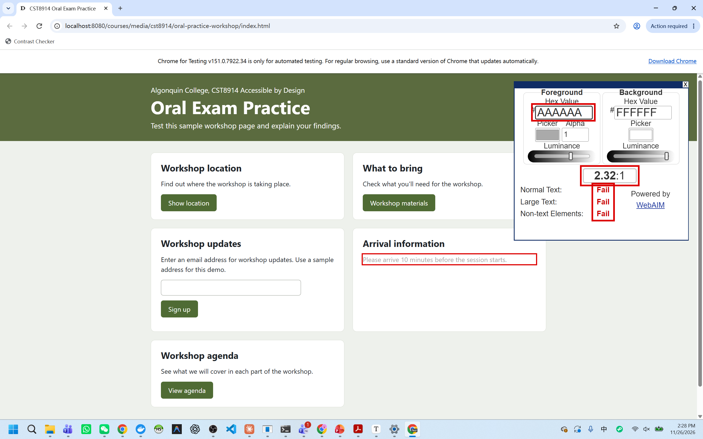
5 Zoom and Reflow（缩放和重排）
每一档只看老师问的两件事：内容有没有被截断（truncated），内容会不会跑出屏幕（flow off of the screen）。
| Step | Action | What you see | 中文翻译 |
|---|---|---|---|
| 1 | Press Ctrl+0, then Ctrl + + five times (110, 125, 150, 175, 200). |
At 200%, the arrival text is truncated. | 按 Ctrl+0，再按五次 Ctrl + +（110、125、150、175、200）。在 200% 时，到达说明文字被截断。 |
| 2 | Press Ctrl + + three more times (250, 300, 400). |
At 400%, the content is truncated and flows off the screen. | 再按三次 Ctrl + +（250、300、400）。在 400% 时，内容被截断，并且跑出屏幕。 |
| 3 | Press Ctrl+0, F12, Ctrl+Shift+M; choose Responsive, type 320 in the width box, then press Enter. |
At 320 px, the text is too small and I can't see what's going on. | 按 Ctrl+0、F12、Ctrl+Shift+M；选 Responsive，在宽度框里输入 320，再按 Enter。在 320 像素时，文字太小，我看不清是怎么回事。 |
| 4 | Press Ctrl+Shift+M to close the device toolbar and F12 to close DevTools. |
Back to normal. | 按 Ctrl+Shift+M 关闭设备工具栏，按 F12 关闭开发者工具。恢复正常。 |
| 5 | Short answer | "At 200%, the arrival text is truncated, so it fails for low-vision users who zoom." | 简短回答：在 200% 时，到达说明文字被截断，所以对需要放大的低视力用户来说不通过。 |
| 6 | Short answer | "At 400%, the content is truncated and flows off the screen, so it fails for low-vision users who zoom." | 简短回答：在 400% 时，内容被截断并且跑出屏幕，所以对需要放大的低视力用户来说不通过。 |
| 7 | Short answer | "At 320 px, the text is too small and I can't see what's going on, so it fails for users on small screens." | 简短回答：在 320 像素时，文字太小，我看不清是怎么回事，所以对小屏幕用户来说不通过。 |
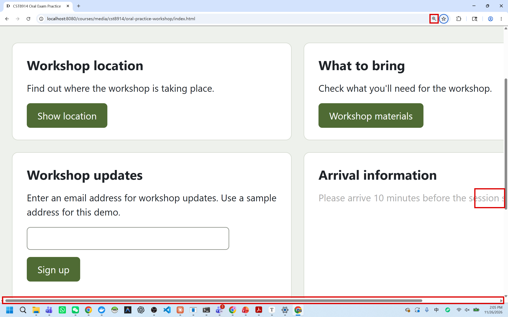
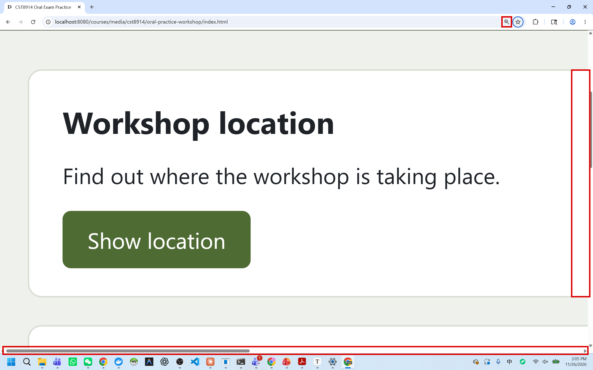
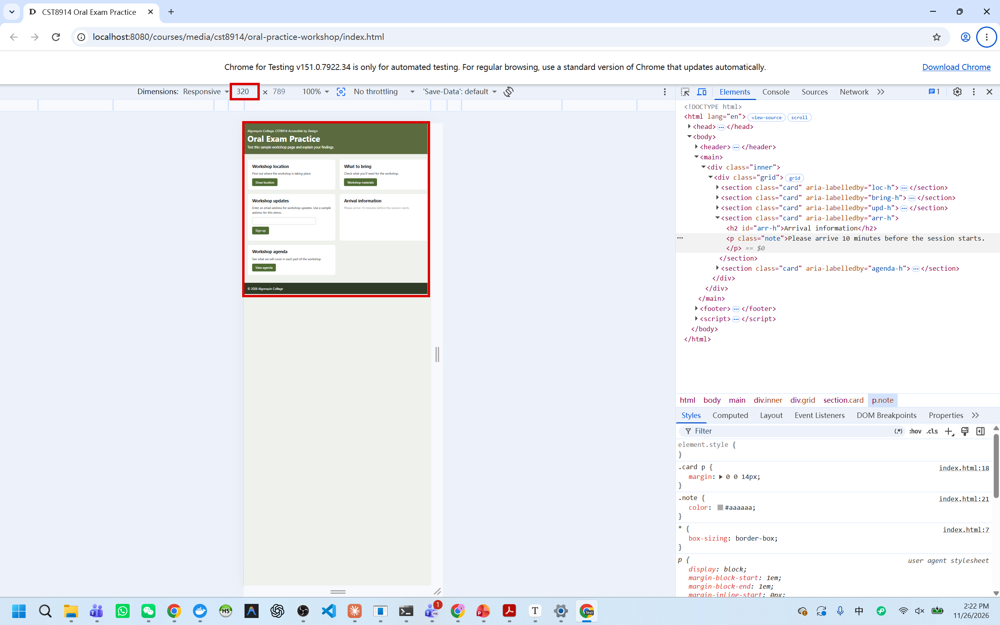